精選論文 Selected Publications
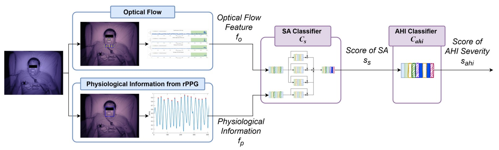
Video-Based Contactless Detection of Sleep Apnea With Deep-Learning Model
Li-Wen Chiu, Yang-Ren Chou, Yi-Chiao Wu, Meng-Liang Chung, Bing-Fei Wu*, Kun-Ta Chou
IEEE Transactions on Instrumentation and Measurement (T-IM) (2024)
View Paper
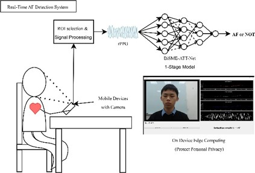
Highlight A Real-Time Contact-Free Atrial Fibrillation Detection System for Mobile Devices
Chih-Wei Tseng, Bing-Fei Wu*, Yu Sun
IEEE Journal of Biomedical and Health Informatics (J-BHI) (2024)
View Paper
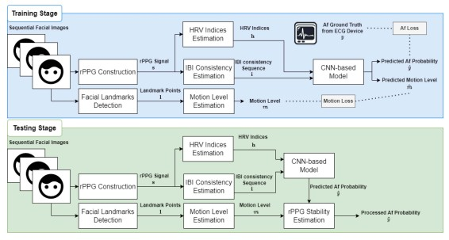
Contact-Free Atrial Fibrillation Screening With Attention Network
Yi-Chiao Wu, Chun-Hsien Lin, Li-Wen Chiu, Bing-Fei Wu, Meng-Liang Chung, Sung-Chun Tang, Yu Sun*
IEEE Journal of Biomedical and Health Informatics (J-BHI) (2024)
View Paper
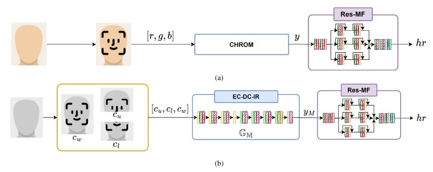
Deep-Learning-Based Remote Photoplethysmography Measurement in Driving Scenarios With Color and Near-Infrared Images
Li-Wen Chiu, Yang-Ren Chou, Yi-Chiao Wu, Bing-Fei Wu*
IEEE Transactions on Instrumentation and Measurement (T-IM) (2023)
View Paper
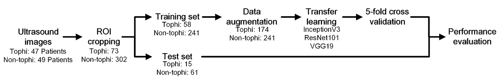
Identification of tophi in ultrasound imaging based on transfer learning and clinical practice
Tzu-Min Lin, Hsiang-Yen Lee, Ching-Kuei Chang, Ke-Hung Lin, Chi-Ching Chang, Bing-Fei Wu, Syu-Jyun Peng*
Scientific reports (SciRep) (2023)
View Paper
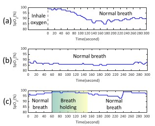
Peripheral Oxygen Saturation Measurement Using an RGB Camera
Bing-Jhang Wu, Bing-Fei Wu*, You-Cheng Dong, Hsiang-Chun Lin, Ping-Hung Li
IEEE Sensors Journal (2023)
View Paper
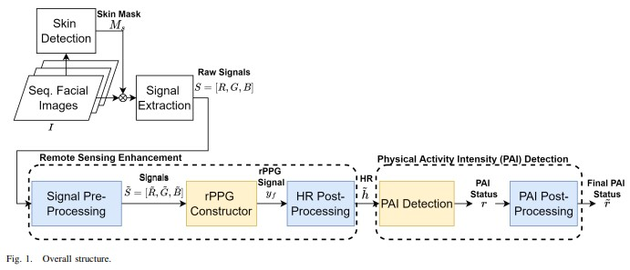
Motion Robust Remote Photoplethysmography Measurement During Exercise for Contactless Physical Activity Intensity Detection
Yi-Chiao Wu, Li-Wen Chiu, Bing-Fei Wu*, Linda Li-Chuan Lin, Tsai-Hsuan Ho, Meng-Liang Chung, Shou-Fang Wu
IEEE Transactions on Instrumentation and Measurement (T-IM) (2023)
View Paper
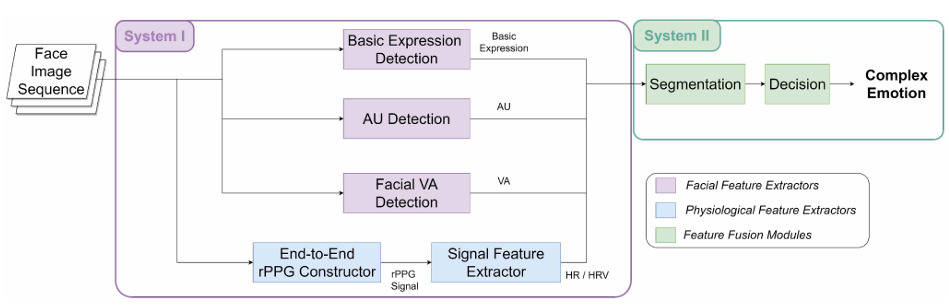
Recognizing, Fast and Slow: Complex Emotion Recognition With Facial Expression Detection and Remote Physiological Measurement
Yi-Chiao Wu, Li-Wen Chiu, Chun-Chih Lai, Bing-Fei Wu*, Sunny SJ Lin
IEEE Transactions on Affective Computing (T-AffC) (2023)
View Paper
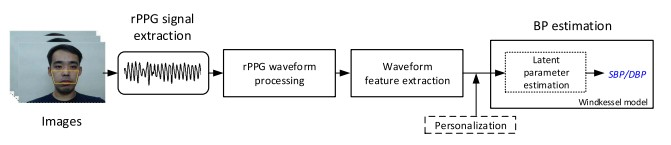
Camera-Based Blood Pressure Estimation via Windkessel Model and Waveform Features
Bing-Jhang Wu, Bing-Fei Wu*, Chi-Po Hsu
IEEE Transactions on Instrumentation and Measurement (TIM) (2023)
View Paper
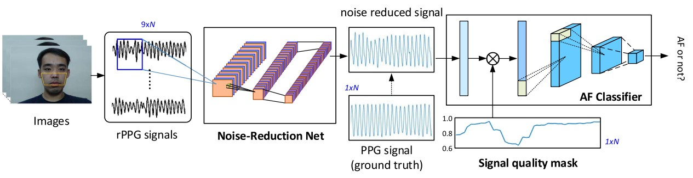
Motion-Robust Atrial Fibrillation Detection Based on Remote-Photoplethysmography
Bing-Fei Wu, Bing-Jhang Wu*, Shao-En Cheng, Yu Sun, Meng-Liang Chung
IEEE Journal of Biomedical and Health Informatics (J-BHI) (2023)
View Paper
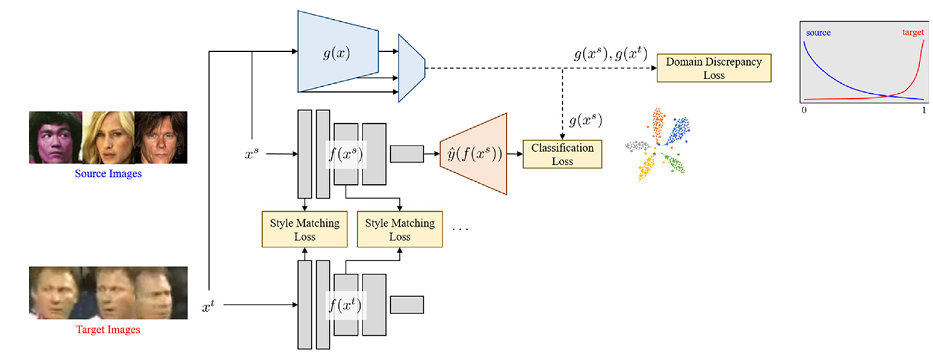
Mitigating Domain Mismatch in Face Recognition Using Style Matching
Chun-Hsien Lin*, Bing-Fei Wu, Chi-Po Hsu
Neurocomputing (2022)
View Paper
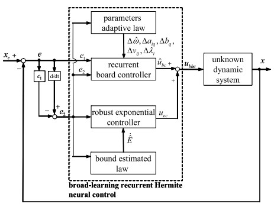
Broad-Learning Recurrent Hermite Neural Control for Unknown Nonlinear Systems
Chun-Fei Hsu*, Bo-Rui Chen, Bing-Fei Wu
Knowledge-Based Systems (KBS) (2022)
View Paper
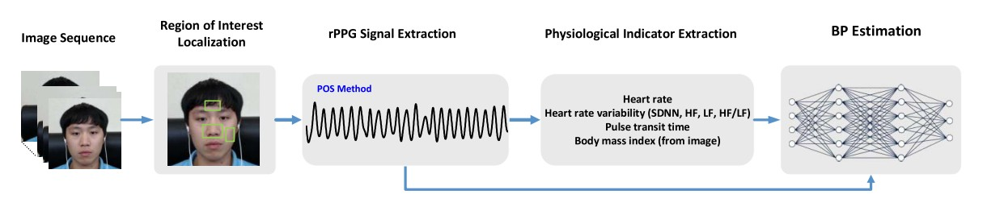
A Facial-Image-Based Blood Pressure Measurement System Without Calibration
Bing-Fei Wu, Bing-Jhang Wu*, Bing-Ruei Tsai, Chi-Po Hsu
IEEE Transactions on Instrumentation and Measurement (TIM) (2022)
View Paper
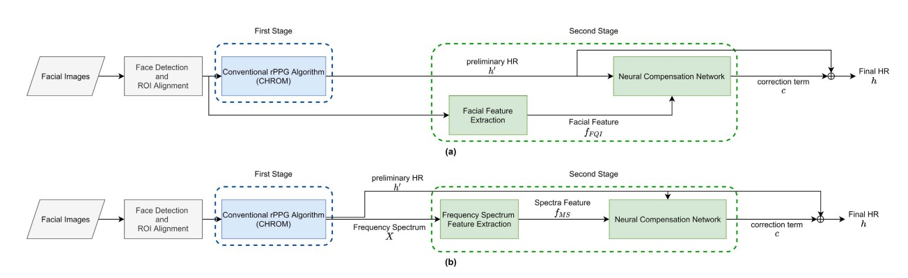
A Compensation Network With Error Mapping for Robust Remote Photoplethysmography in Noise-Heavy Conditions
Bing-Fei Wu, Yi-Chiao Wu*, Yi-Wei Chou
IEEE Transactions on Instrumentation and Measurement (TIM) (2022)
View Paper
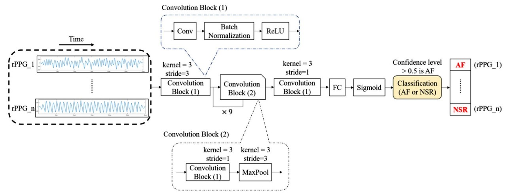
Contactless Facial Video Recording With Deep Learning Models for the Detection of Atrial Fibrillation
Yu Sun, Yin-Yin Yang, Bing-Jhang Wu, Po-Wei Huang, Shao-En Cheng, Bing-Fei Wu*, Chun-Chang Chen
Scientific Reports (SciRep) (2022)
View Paper
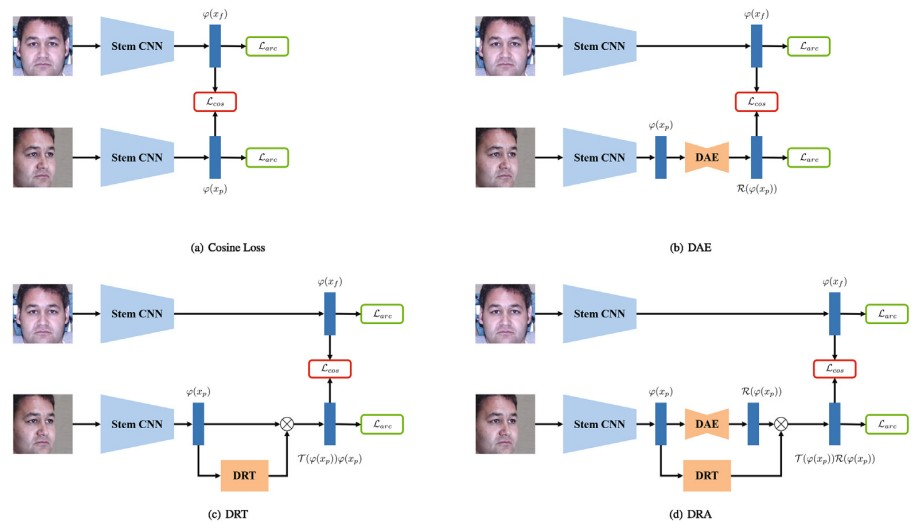
Deep Representation Alignment Network for Pose-Invariant Face Recognition
Chun-Hsien Lin*, Wei-Jia Huang, Bing-Fei Wu
Neurocomputing (2021)
View Paper
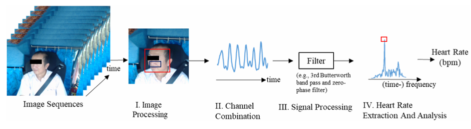
A Heart Rate Monitoring Framework for Real-World Drivers Using Remote Photoplethysmography
Po-Wei Huang*, Bing-Jhang Wu, Bing-Fei Wu
IEEE Journal of Biomedical and Health Informatics (J-BHI) (2021)
View Paper
媒體報導與影音 Media & Talks
instagram | 2025/08/30
【產業人物 Wa-People】Podcast EP73 十年深耕車用電子...鉅怡智慧榮獲美國FDA雙重認證

YouTube | 2025/08/07
專訪 2025 傑出生技獎 年度產業創新獎 鉅怡智慧創辦人 吳炳飛講座教授

YouTube | 2025/07/02
陽明交大2025年傑出校友 專訪影片｜吳炳飛

website | 2024/08/21
大學教授創業「電視幫你量血壓」，獲聯發科、台杉等A咖投資！台灣新創家數10年爆增2倍，4大亮點一次看

website | 2021/05/10
吳炳飛講座教授：教不在巧，有心則靈；研不在深，有用則名

website | 2020/07/28
鉅怡智慧打造非接觸影像生理訊號偵測系統，聚焦智慧健康管理、智慧金融、疫情隔離多元應用

website | 2019/06/10
獨步全球 交大團隊AI「看」人臉測心跳

website | 2019/06/10
教授技術創業 新創公司估值達5億元

website | 2019/05/26
吳炳飛鉅怡智慧雙心法：既要無感又與眾不同

website | 2017/